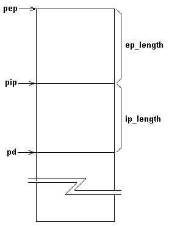
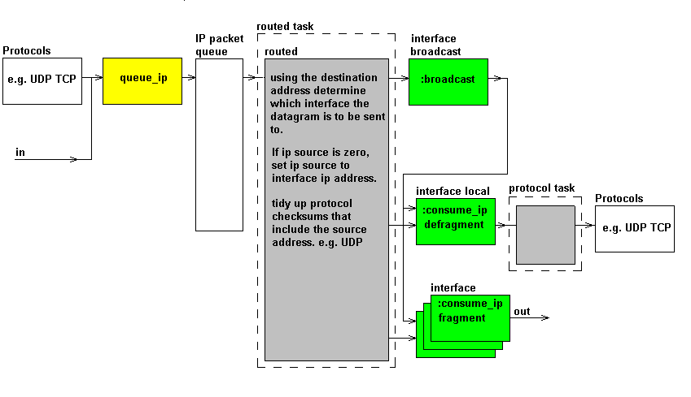

The ip packet is structured as shown below. An application that uses queue_ip packets must understand this, as room has to be left at the start of the packet for the ep header and the ip header. This has to be, we do not want to be doing block moves as we move the packet up/down the protocol stack.
All ip packets are queued into the IP packet queue. This is a priority queue, with the packet priority field ( contained in the ip header) giving which queue level the packet is queued onto. All interfaces have a :queue_ip method. The queue_ip method expects a correctly formed ip packet. The following ip fields must be filled in
If IP options are to be used they must be written in th data field and HLEN set to reflect there existance. queue_ip is a low level word, applications that use it must deal with the complications.
Routed will.
If the packet is queued with a source address of zero, routed will:
If the packet is queued with a source address routed assumes that the packet was sourced elsewhere.
All ip packets are taken from the ip packet queue, there is no special path for local or broadcast packets. The routing routine will determine a destination interface using the destination ip address. For local broadcast addresses it will be the broadcast_interface. For local addresses it will be a local_interface. For a remote adddress is will be a interface that can send ip packets off card.
The address resolution protocol ( ARP) is only required if the hardware address cannot be determined from the IP address, as an example ethernet. :consume_interface will deal with the problem. It is also consume_interface's problem to fragment or defragment the packet if required. The local interface will defragment, interfaces that send packets over the wire will fragment. We do it in consume_interface so that the full outgoing record goes through routed, and the hardware address only has to be resolved for the larger packet. We defragment in the local consume_interface method because it is only then that we know the packet has to be reconstructed. We have to do it at consume_interface as write_pep ( the word one layer down) can be sending packets other than ip. It is also consume_interface that has to convert the ip header into network order, and checksum the header.We don't muck around with incremental checksum updates. Such things also have to allow for ip options.